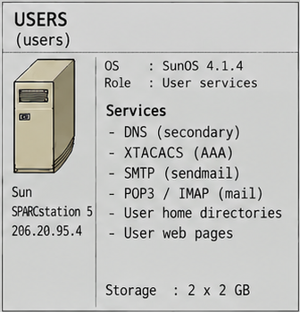

Systems Overview · 1995
USERS (users)
USERS was one of the two central production servers and the one customers interacted with most: authentication, mail and customer accounts.

images/internetforce_server_map.png (Systems Overview 1995).System identity
- Hostname
users- Address
206.20.95.4· segment viafw-users206.20.95.11- Platform
- Sun SPARCstation 5
- OS
- SunOS 4.1.4
- Role
- User services: authentication, mail, customer accounts.
Services and configuration
| Service / role | Description | Configuration / evidence | Documentation |
|---|---|---|---|
Secondary DNS (dns2) |
Secondary nameserver for the Internet Force zones, transferred from DATA. | no USERS-specific configuration recovered | DNS |
| XTACACS / AAA | Central authentication for every dial-up access server. | tacacs/xtacacsd-conf · tacacs/ | Authentication (XTACACS) |
| SMTP / sendmail | Primary mail host for internetforce.com (MX 0), Sendmail 8.6.12. |
mail/sendmail.cf.users | |
| POP3 | Mailbox access via the Berkeley popper. |
system/inetd.conf · system/services | Email · POP3 and mailbox access |
| IMAP | Mailbox access via imapd. |
system/inetd.conf · system/services | |
| Customer home directories and quotas | Accounts, restricted shell, disk quotas and filesystem layout. | system/passwd.users-jan1995 · system/quota.txt · system/restricted-shell.txt · system/rc.local | Customer provisioning · Operations and backup |
| Customer web pages | NCSA HTTPd for ~user and virtual hosts. |
system/httpd/httpd.conf · system/ | Web, FTP, news and mailing lists · Web permissions and CGI |
Secondary DNS note
There is no USERS-specific named.boot in the public archive: the secondary DNS role is documented, not configured here. The secondary-zone material is kept with the primary nameserver (DATA/dns).
On the maps
Full technical documentation
Open the canonical USERS README
This HTML page is a compact presentation; the Markdown README is the canonical source.